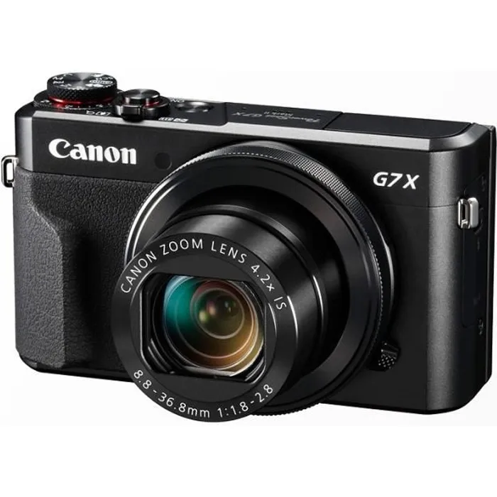

La photographie numérique apparaît dans les années 1970 et marque le début d’une nouvelle manière de capturer les souvenirs. Le premier appareil numérique transforme profondément notre rapport à l’image, ouvrant la voie à une évolution rapide. Dans les années 1990, elle devient accessible au grand public, et aujourd’hui, les smartphones permettent à chacun d’immortaliser instantanément les moments de la vie quotidienne.
Vidéo sur l'histoire de la photographie

| Période | Évolution |
|---|---|
| 1975 | Premier appareil numérique |
| 1990 | Développement grand public |
| Aujourd’hui | Smartphones |